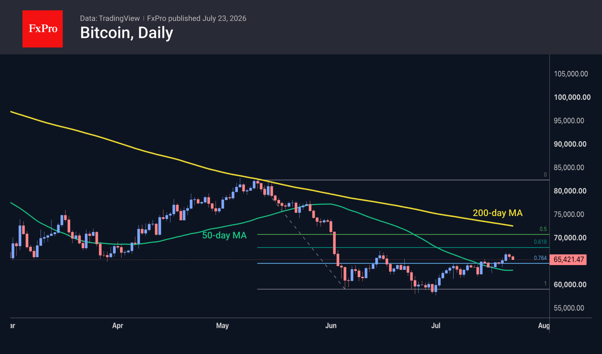
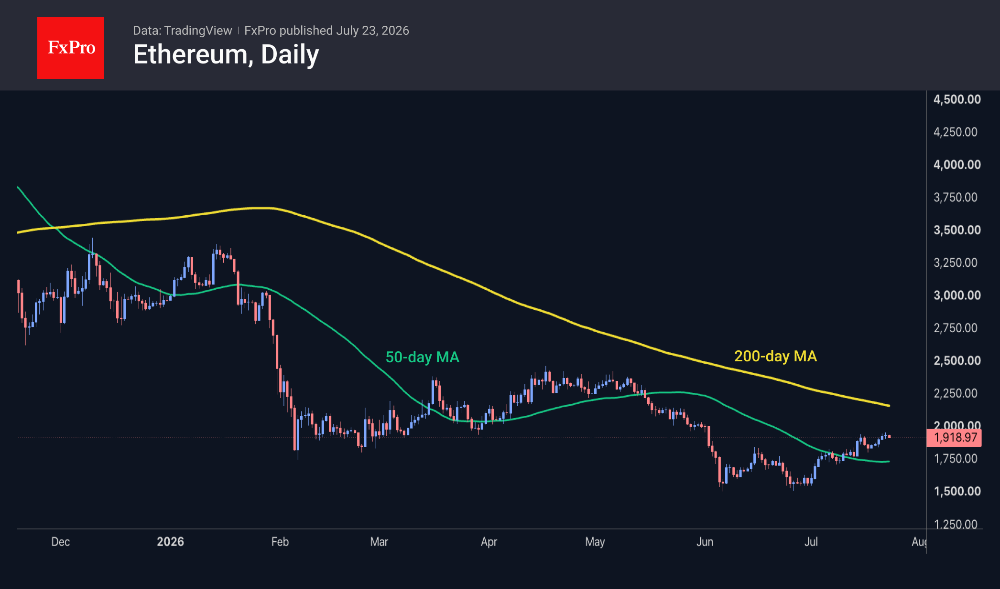

Market Overview
The crypto market capitalisation has changed little over the past 24 hours, continuing to hover around $2.24T. The market remains near its recent high, consolidating despite a strengthening US dollar and cautious sentiment in equity markets. The sentiment index has fallen from 33, its highest level since May, to 31, remaining in ‘fear’ territory. Among the most popular coins, the top performers over the past day were Hedera (+6%), Uniswap (+4.4%) and Aptos (+3.6%). Filecoin (-4.9%), Stellar (-2.6%) and Bitcoin Cash (-2.4%) are falling more than the others.
Bitcoin retreated to $65.4K, losing ground for the second day in a row after touching the area of its local June highs. This pullback has reinforced the sense that bears remain in control of prices, preventing the technical rebound from developing into a broader recovery and establishing the 61.8% retracement level of the May–June decline as resistance.
Ethereum also lost momentum near $1,950, failing to break above the former support zone, which has now turned into resistance, on its first attempt. The second-largest cryptocurrency may find itself in a vacuum, down to the $1,750–1,800 range, with no significant barriers to further declines. A drop below $1,700 would be a worrying sign of a resumption of the downtrend.



News Background
Bitcoin has entered a zone of extreme undervaluation, according to the MVRV indicator, which currently stands below 5%, notes analyst Crypto Tice. Historically, whenever this indicator has reached such levels, it has coincided with the formation of a long-term bottom for BTC.
Bitcoin has every chance of rising to $116K by the end of the year, predicts analyst CryptoPatel. In his view, the bear market bottom has been reached, and a reversal is beginning, as it did at the end of 2022.
Artemis has calculated that the assets of DAT companies have fallen by more than a third since October, from $120 billion to $75 billion. Crypto treasuries have lost tens of billions of dollars as Bitcoin’s price has fallen.
Satsuma Technology, the UK’s second-largest holder of Bitcoin, is set to sell all 668 BTC in its reserves. The company began building these reserves in August 2025, at an average price of $113.2K per coin. Satsuma’s shares have fallen by more than 99% from their peak and are set for delisting from the London Stock Exchange.
According to CryptoQuant, miners’ off-exchange Bitcoin reserves have fallen by 72% since the end of 2021, to 139,700 BTC. The figure has been steadily declining over the past four years.
Solana has begun preparing validators for the large-scale Alpenglow update, which is expected to result in an 80-fold increase in transaction speed. The roll-out is scheduled to take place in phases from August to October this year.
The FxPro Analyst Team